enforce_time_signature¶
- auxjad.mutate.enforce_time_signature(container: abjad.score.Container, time_signatures: Union[abjad.indicators.TimeSignature.TimeSignature, tuple, list], *, cyclic: bool = False, fill_with_rests: bool = True, close_container: bool = False, disable_rewrite_meter: bool = False, prettify_rewrite_meter: bool = True, boundary_depth: Optional[int] = None, maximum_dot_count: Optional[int] = None, rewrite_tuplets: bool = True, extract_trivial_tuplets: bool = True, fuse_across_groups_of_beats: bool = True, fuse_quadruple_meter: bool = True, fuse_triple_meter: bool = True, split_quadruple_meter: bool = True) → None[source]¶
Mutates an input container (of type
abjad.Containeror child class) in place and has no return value; this function applies a time signature (or alistof time signatures) to the input container.- Basic usage:
The function mutates a container in place, applying a time signature to it.
>>> staff = abjad.Staff(r"c'1 d'1") >>> abjad.show(staff)

>>> auxjad.mutate.enforce_time_signature( ... staff, ... abjad.TimeSignature((2, 4)) ... ) >>> abjad.show(staff)
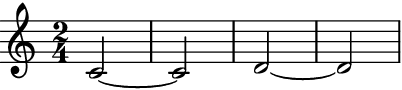
Note
Auxjad automatically adds this function as an extension function to
abjad.mutate. It can thus be used from eitherauxjad.mutateorabjad.mutatenamespaces. Therefore, the two lines below are equivalent:>>> auxjad.mutate.enforce_time_signature( ... staff, ... abjad.TimeSignature((2, 4)) ... ) >>> abjad.mutate.enforce_time_signature( ... staff, ... abjad.TimeSignature((2, 4)), ... )
- Single value for second positional argument:
The second positional argument can take either
abjad.TimeSignatureor atuplefor a single time signature (for multiple time signatures, use alistas shown further below). By default, rests will be appended to the end of the staff if necessary.>>> staff = abjad.Staff(r"c'1 d'1") >>> abjad.show(staff)

>>> auxjad.mutate.enforce_time_signature(staff, (3, 4)) >>> abjad.show(staff)
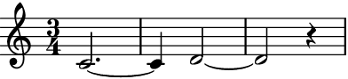close_container:Set the optional keyword argument
close_containertoTruein order to adjust the last measure’s time signature instead of filling it with rests.>>> staff = abjad.Staff(r"c'1 d'1 e'1 f'1") >>> abjad.show(staff)

>>> auxjad.mutate.enforce_time_signature( ... staff, ... abjad.TimeSignature((3, 4)), ... close_container=True, ... ) >>> abjad.show(staff)

fill_with_rests:Alternatively, to leave the last measure as it is input (i.e. not filling it with rests nor adjusting the time signature), set the optional keyword argument
fill_with_reststoFalse(default value isTrue).>>> staff = abjad.Staff(r"c'1 d'1 e'1 f'1") >>> abjad.show(staff)

>>> auxjad.mutate.enforce_time_signature( ... staff, ... abjad.TimeSignature((3, 4)), ... fill_with_rests=False, ... ) >>> abjad.show(staff)
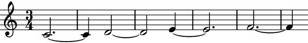- Multiple values for second positional argument:
The second argument can also take a
listofabjad.TimeSignatureortuple.>>> staff = abjad.Staff(r"c'1 d'1") >>> abjad.show(staff)

>>> time_signatures = [abjad.TimeSignature((3, 4)), ... abjad.TimeSignature((5, 4)), ... ] >>> auxjad.mutate.enforce_time_signature(staff, time_signatures) >>> abjad.show(staff)
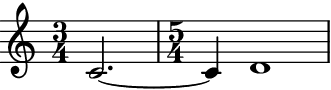- Repeated time signatures:
Consecutive identical time signatures are omitted. Also note that time signatures can also be represented as a
listoftuple’s.>>> staff = abjad.Staff(r"c'1 d'1 e'1 f'1") >>> abjad.show(staff)
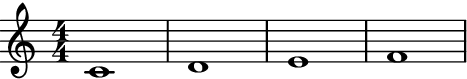>>> time_signatures = [(2, 4), ... (2, 4), ... (4, 4), ... ] >>> auxjad.mutate.enforce_time_signature(staff, time_signatures) >>> abjad.show(staff)

Alternatively, use
Noneto indicate repeated time signatures:>>> staff = abjad.Staff(r"c'1 d'1 e'1 f'1") >>> abjad.show(staff)

>>> time_signatures = [(2, 4), ... None, ... None, ... (3, 4), ... None, ... (4, 4), ... ] >>> auxjad.mutate.enforce_time_signature(staff, time_signatures) >>> abjad.show(staff)

cyclic:To cycle through the
listof time signatures until the container is exhausted, set the optional keyword argumentcyclictoTrue.>>> staff = abjad.Staff(r"c'1 d'1 e'1 f'1") >>> abjad.show(staff)

>>> time_signatures = [abjad.TimeSignature((3, 8)), ... abjad.TimeSignature((2, 8)), ... ] >>> auxjad.mutate.enforce_time_signature( ... staff, ... time_signatures, ... cyclic=True, ... ) >>> abjad.show(staff)
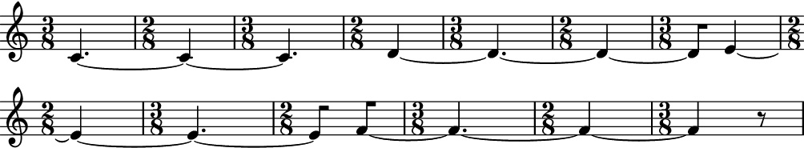disable_rewrite_meter:By default, this function applies the mutation
abjad.Meter.rewrite_meter()to its output.>>> staff = abjad.Staff(r"c'1 ~ c'4 r8 d'4. e'4") >>> time_signatures = [abjad.TimeSignature((5, 4)), ... abjad.TimeSignature((3, 4)), ... ] >>> auxjad.mutate.enforce_time_signature(staff, time_signatures) >>> abjad.show(staff)
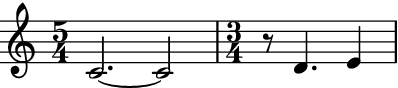To disable this, set the keyword argument
disable_rewrite_metertoTrue.>>> staff = abjad.Staff(r"c'1 ~ c'4 r8 d'4. e'4") >>> time_signatures = [abjad.TimeSignature((5, 4)), ... abjad.TimeSignature((3, 4)), ... ] >>> auxjad.mutate.enforce_time_signature( ... staff, ... time_signatures, ... disable_rewrite_meter=True, ... ) >>> abjad.show(staff)

- Tuplets:
The function handles tuplets, even if they must be split.
>>> staff = abjad.Staff(r"\times 2/3 {c'2 d'2 e'2} f'1") >>> abjad.show(staff)
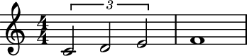>>> time_signatures = [abjad.TimeSignature((2, 4)), ... abjad.TimeSignature((3, 4)), ... ] >>> auxjad.mutate.enforce_time_signature(staff, time_signatures) >>> abjad.show(staff)

- Time signatures in the input container:
Note that any time signatures in the input container will be ignored.
>>> staff = abjad.Staff(r"\time 3/4 c'2. d'2. e'2. f'2.") >>> abjad.show(staff)
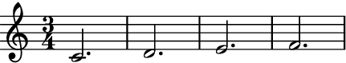>>> time_signatures = [abjad.TimeSignature((5, 8)), ... abjad.TimeSignature((1, 16)), ... abjad.TimeSignature((2, 4)), ... ] >>> auxjad.mutate.enforce_time_signature( ... staff, ... time_signatures, ... cyclic=True, ... ) >>> abjad.show(staff)
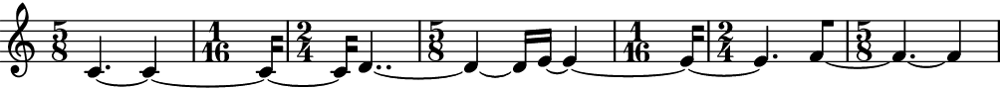- Tweaking
abjad.Meter.rewrite_meter(): This function uses the default logical tie splitting algorithm from
abjad.Meter.rewrite_meter().>>> staff = abjad.Staff(r"c'4. d'8 e'2") >>> auxjad.mutate.enforce_time_signature( ... staff, ... abjad.TimeSignature((4, 4)), ... ) >>> abjad.show(staff)
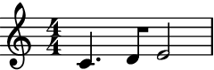Set
boundary_depthto a different number to change its behaviour.>>> staff = abjad.Staff(r"c'4. d'8 e'2") >>> auxjad.mutate.enforce_time_signature( ... staff, ... abjad.TimeSignature((4, 4)), ... boundary_depth=1, ... ) >>> abjad.show(staff)
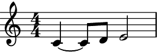Other arguments available for tweaking the output of
abjad.Meter.rewrite_meter()aremaximum_dot_countandrewrite_tuplets, which work exactly as the identically named arguments ofabjad.Meter.rewrite_meter().This function also accepts the arguments
fuse_across_groups_of_beats,fuse_quadruple_meter,fuse_triple_meter,extract_trivial_tuplets, andsplit_quadruple_meter, which are passed on toauxjad.mutate.prettify_rewrite_meter()(the latter can be disabled by settingprettify_rewrite_metertoFalse). See the documentation of this function for more details on these arguments.
Note
When using
abjad.Container’s, all time signatures in the output will be commented out with%%%.This is because Abjad only applies time signatures to containers that belong to aabjad.Staff. The present function works with eitherabjad.Containerandabjad.Staff.>>> container = abjad.Container(r"\time 3/4 c'4 d'4 e'4") >>> abjad.show(container)

>>> staff = abjad.Staff([container]) >>> abjad.show(container)

Warning
The input container must be a contiguous logical voice. When dealing with a container with multiple subcontainers (e.g. a score containing multiple staves), the best approach is to cycle through these subcontainers, applying this function to them individually.